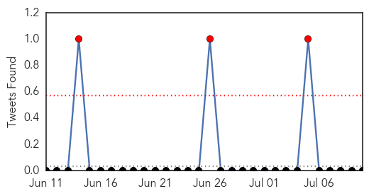
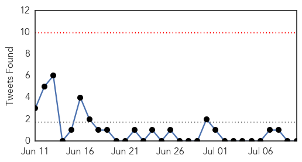
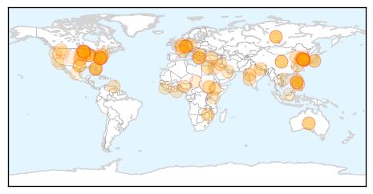

Dengue Fever
30-Day Web Trend
7 alerts, 5 warnings

30-Day Twitter Trend
3 alerts, 0 warnings

Article Locations

Article Confidences

Top Articles:
- 0.954
- As Dengue Fever Sweeps India, a Slow Response Stirs Experts’ Fears
- 0.952
- Dengue Fever in Am. Samoa upgraded to epidemic
- 0.937
- South Goa tense as dengue toll hits 58
- 0.891
- Cases of vector-borne diseases on the decline
- 0.862
- Yemen dengue outbreak: Rep. Dingell sends letter to Sec. John Kerry urging a negotiated solution to the conflict
- 0.845
- Dengue outbreak declared in Tuguegarao
- 0.637
- Make water safe at any cost, CM tells KWSB
- 0.580
- JP Nadda pays surprise visit to RML hospital, checks preparedness for dengue
- 0.568
- Nadda inspects facilities at RML hospital
- 0.549
- Health minister Nadda inspects facilities at RML hospital
- 0.544
- Sangam vihar flooded: Buildings collapse, drains overflow, residents struggle
Top Tweets:
- 0.773
- Flavivirus news: 19 dengue cases reported in Mizoram - Oneindia: Oneindia19 dengue cases report... http://t.co/AixWKoNYRc pathogenposse
- 0.684
- Flavivirus news: Dengue outbreak declared in Tuguegarao - Rappler: RapplerDengue outbreak decla... http://t.co/L3pkQx8Zqs pathogenposse
Unknown
30-Day Web Trend
0 alerts, 0 warnings

30-Day Twitter Trend
0 alerts, 0 warnings

Article Locations
Article Confidences

Top Articles:
- 0.996
- Foreigner with MERS in Philippines now free of the virus
- 0.986
- MERS patient in Philippines declared free of virus
- 0.986
- MERS patient in Philippines declared free of virus
- 0.985
- Foreigner with MERS now free of virus
- 0.970
- Doctors regret MERS lawsuit
- 0.969
- Five more recovered from MERS
- 0.952
- Contaminated pool water can affect your skin, stomach and respiratory system
- 0.948
- Q fever: New push for vaccination campaign against deadly disease spread by livestock
- 0.931
- Rising drug resistance threatens global progress against TB
- 0.928
- Killer squirrel virus claims three lives in Germany
- 0.921
- Health officials collect 25 sandfly samples
- 0.918
- MERS Outbreak Shows Failures of South Korea’s Public Health System
- 0.917
- Chicago Tribune
- 0.917
- Chicago Tribune
- 0.917
- Chicago Tribune
- 0.917
- Chicago Tribune
- 0.917
- Chicago Tribune
- 0.917
- Chicago Tribune
- 0.917
- Chicago Tribune
- 0.917
- Chicago Tribune
- 0.917
- Chicago Tribune
- 0.917
- Chicago Tribune
- 0.917
- Chicago Tribune
- 0.917
- Chicago Tribune
- 0.917
- Chicago Tribune
- 0.917
- Chicago Tribune
- 0.917
- Chicago Tribune
- 0.917
- Chicago Tribune
- 0.917
- Chicago Tribune
- 0.917
- Chicago Tribune
- 0.917
- Chicago Tribune
- 0.917
- Chicago Tribune
- 0.917
- Chicago Tribune
- 0.917
- Chicago Tribune
- 0.917
- Chicago Tribune
- 0.917
- Chicago Tribune
- 0.917
- Chicago Tribune
- 0.917
- Chicago Tribune
- 0.917
- Chicago Tribune
- 0.901
- Seasonal patients up in Tanahun
- 0.897
- The Florida Department of Health is investigating confirmed cases of Legionnaires' disease at an Altamonte Springs hotel.
- 0.881
- WHO says universal coverage key to meeting global health goals
- 0.856
- Mumbai: One more leptospirosis death, toll up to 15
- 0.840
- Global Threat: 'The world is at threat of diseases'
- 0.814
- Shigellosis cases on the rise in Woodbury County
- 0.809
- WFMJ.com News weather sports for Youngstown-Warren Ohio
- 0.802
- Squirrel Virus May Have Killed Three Humans
- 0.791
- Squirrel Virus Killed 3 People In Germany
- 0.763
- Encephalitis death count reaches 11 in Bengal
- 0.762
- KBS World Radio
Showing top 50 articles...
Top Tweets:
-
No tweets found for Jul 10, 2015